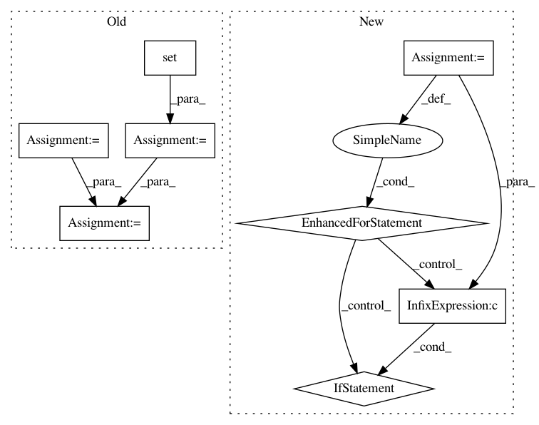

5c8f92c5d865bb8d8a90740506e4a7ef9f62398c,python/src/nnabla/utils/converter/tensorflow/importer.py,,_find_out_terminal_node,#Any#,32
Before Change
unlike_output_types = ["Const", "Assign", "Noop", "Placeholder"]
terminal_inputs = []
inputs = set()
outputs = set()
need_add_postfix = kwargs.get("postfix", False)
for node in graph_def.node:
strip_name = _strip_node_name(node.name)
if node.op == "Placeholder":
terminal_inputs.append(_strip_node_name(node.name))
outputs.add(strip_name)
inputs.update(set(node.input))
terminal_outputs = list(filter(lambda x: x not in unlike_output_types,
outputs - inputs))
if need_add_postfix:
terminal_inputs = add_postfix(terminal_inputs)
terminal_outputs = add_postfix(terminal_outputs)
After Change
strip_name = _strip_node_name(node.name)
terminal_inputs.append(strip_name)
for node in graph_def.node:
if input_cnt[node.name] == 0 and node.op not in unlike_output_types:
terminal_outputs.append(node.name)
if need_add_postfix:
terminal_inputs = add_postfix(terminal_inputs)
terminal_outputs = add_postfix(terminal_outputs)
In pattern: SUPERPATTERN
Frequency: 3
Non-data size: 8
Instances
Project Name: sony/nnabla
Commit Name: 5c8f92c5d865bb8d8a90740506e4a7ef9f62398c
Time: 2019-04-24
Author: Yuchi.Wen@sony.com
File Name: python/src/nnabla/utils/converter/tensorflow/importer.py
Class Name:
Method Name: _find_out_terminal_node
Project Name: brian-team/brian2
Commit Name: bf72974b7eb2229b6f4f4d7ae6b654693785d71f
Time: 2014-09-19
Author: marcel.stimberg@ens.fr
File Name: brian2/core/magic.py
Class Name: MagicNetwork
Method Name: _update_magic_objects
Project Name: pgmpy/pgmpy
Commit Name: ca25da7c55ba436ab557410d5f2e2e9b557d2840
Time: 2015-03-02
Author: abinash.panda.ece10@itbhu.ac.in
File Name: pgmpy/models/MarkovModel.py
Class Name: MarkovModel
Method Name: to_junction_tree